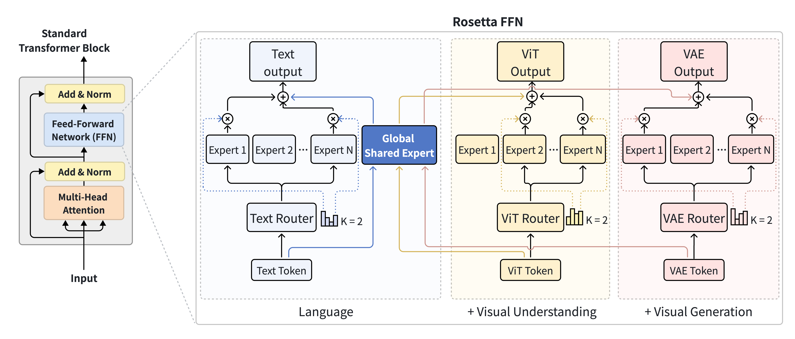

Abstract
We present Rosetta, a composable native multimodal pretraining framework for integrating understanding and generation without catastrophic forgetting. Unlike standard MoE and structurally partitioned MoT, which suffer severe gradient conflicts and representation overwriting when continuous generative objectives are added, Rosetta preserves foundational knowledge in global shared experts while expanding through plug-and-play modality experts.
To guarantee non-destructive composition with zero additional memory overhead, we propose Momentum-Anchored Orthogonal Projection (MAOP), which repurposes optimizer momentum as an implicit semantic anchor to selectively neutralize conflicting gradient components from new modalities. Under strict parameter parity with MoE and MoT baselines in the Transfusion framework, extensive experiments show that Rosetta maintains language and visual understanding ability while delivering superior image generation and cross-modal synergy.
Architecture

Figure 2. Rosetta FFN. Three mechanisms enable non-destructive modality expansion: (1) Unified Attention, globally shared QKV projections preserve dense cross-modal interactions. (2) Composable FFN, modality-specific plug-and-play experts (Text / ViT / VAE) are bridged by a single Global Shared Expert that anchors foundational knowledge. (3) Conflict-Free Optimization (MAOP), surgically neutralizes destructive gradients with zero memory overhead.